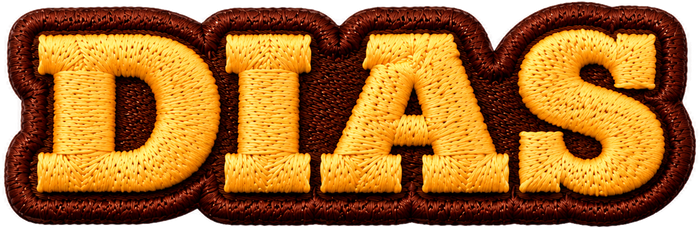
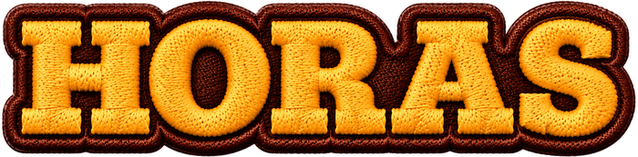
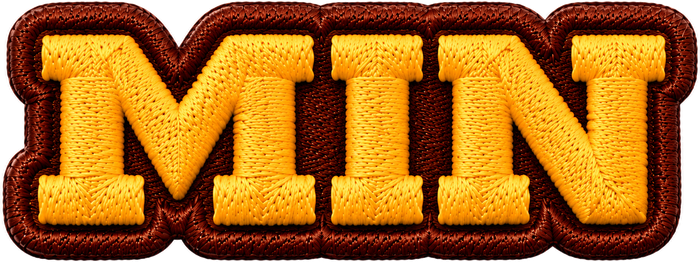
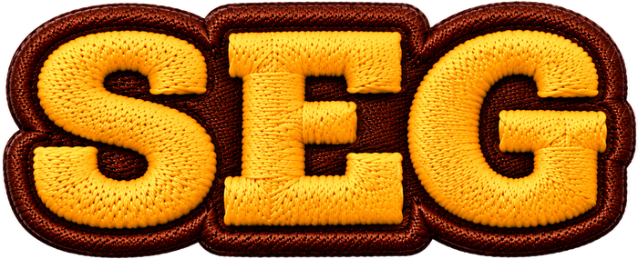

Nascido em Houston, Texas, Jimmy Ogro carrega desde a infância a cultura americana da brasa, do barbecue e das grandes carnes. Filho de pai americano e mãe brasileira, transformou essa mistura de culturas em uma assinatura gastronômica única.
Há mais de 12 anos no Mais Você, da TV Globo, Jimmy se tornou uma das figuras mais conhecidas da gastronomia brasileira e presença constante nos grandes eventos de fogo e brasa do país. Hoje, é reconhecido também como embaixador da carne suína no Brasil.
E agora, toda essa experiência texana encontra a paixão brasileira pelo churrasco no Penedo BBQ Festival.
O Penedo BBQ Festival é o maior festival de churrasco do estado do Rio de Janeiro. São 08h de open bar e 08h de open food: os melhores cortes de carnes premium, bebidas selecionadas e tudo à vontade, do início ao fim do dia. Uma experiência pensada para reunir boa carne, boa companhia e um cenário que você não esquece.
Porque o Penedo BBQ Festival é viver o seu melhor momento.
Cortes de carnes premium, peixes e muito mais, preparados pelos chefes assadores mais renomados.
Bebidas selecionadas em todo o momento do festival (chopp, refrigerantes e água) para você viver um momento inesquecível.
Acompanhamentos, hambúrgueres e o melhor para deixar seu momento ainda melhor.
O destino
Penedo é o maior polo cultural e turístico do Rio de Janeiro, cercado pela Serra da Mantiqueira. São mais de 70 hotéis e chalés, uma colônia com raízes na Finlândia e uma gastronomia própria que poucos lugares do Brasil oferecem. O festival acontece dentro desse cenário, com ar puro, natureza por todos os lados e tempo de sobra para aproveitar com calma.
No dia 4 de setembro de 2027, das 13h às 21h, em Penedo, Itatiaia (RJ), no coração da Serra da Mantiqueira.
Nesta edição o festival é open food e open bar (chopp, refrigerantes e água). Seu ingresso dá acesso aos melhores cortes preparados pelos nossos assadores, às bebidas da casa e a todas as atrações musicais, incluindo o show de Munhoz & Mariano. Você vai comer e beber à vontade.
Pode, sim. O Penedo BBQ Festival foi pensado para ser vivido em família, num ambiente acolhedor e organizado. Crianças de até 9 anos não pagam. Crianças de 10 a 15 anos, consultar valores.
A pré-venda abre em 10 de março de 2027, com lotes limitados e o melhor valor. Cadastre-se para ser avisado em primeira mão. Membros da nossa comunidade são avisados com antecedência.
Penedo tem pousadas, chalés e hotéis para todos os estilos, a poucos minutos do festival. A dica é reservar com antecedência, porque a cidade lota no fim de semana do evento.
Nossa indicação: Hotel Titanic, Hotel do Papai Noel, Vert Hotel e Spa, Rede de Pousada Pássaros, Rio-Penedo Hotel, Pousada Casa do Bosque, Recanto dos Pássaros, Villa Luna Pousada, Pousada Terraço Penedo e Hotel Penedo Inn.
A dupla sertaneja mais amada do Brasil, Munhoz & Mariano, além de country e DJ com músicas eletrônicas.
Descontos em viradas de lotes, brindes e prêmios, novidades em primeira mão, entre outros.
Garanta seu lugar
04 de setembro de 2027 · Penedo, RJ
Cadastro Pré-vendaA pré-venda abre em breve. Cadastre-se para ser avisado em primeira mão.